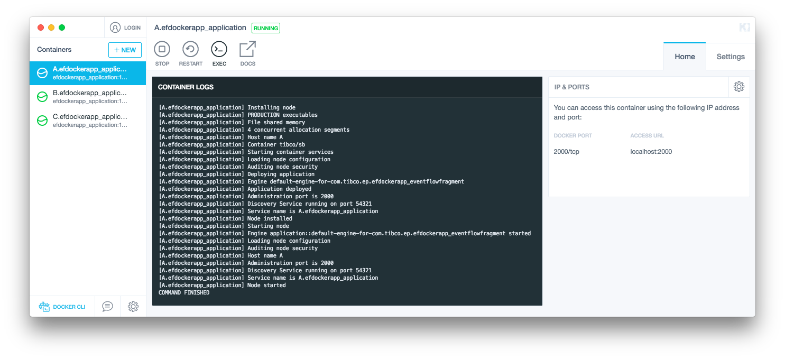

Cloud examples
Docker images
Using an appropriate maven plugin, such as docker-maven-plugin, docker images can be created. A typical base image would contain :
-
Base operating system ( such as CentOs )
-
Additional operating system packages
-
StreamBase runtime
-
Startup script
A typical application image would be based on the image above and then add :
- Application
Using a two-step docker image improves build performance.
The parent pom ep-application-docker, contains docker build rules, so a basic pom.xml to achieve this is shown below :
<?xml version="1.0" encoding="UTF-8"?>
<project xmlns="http://maven.apache.org/POM/4.0.0" xmlns:xsi="http://www.w3.org/2001/XMLSchema-instance" xsi:schemaLocation="http://maven.apache.org/POM/4.0.0 http://maven.apache.org/xsd/maven-4.0.0.xsd">
<!-- vim: set tabstop=4 softtabstop=0 expandtab shiftwidth=4 smarttab : -->
<modelVersion>4.0.0</modelVersion>
<groupId>com.tibco.ep</groupId>
<artifactId>dockerapp</artifactId>
<packaging>ep-application</packaging>
<version>10.4.0</version>
<name>hello application</name>
<!-- common definitions for this version of StreamBase -->
<parent>
<groupId>com.tibco.ep.sb.parent</groupId>
<artifactId>ep-application-docker</artifactId>
<version>10.4.0</version>
</parent>
<properties>
<dockerDomain>example.com</dockerDomain>
</properties>
</project>
Note that this requires docker to be installed.
Additional build rules can be added to start test nodes :
<?xml version="1.0" encoding="UTF-8"?>
<project xmlns="http://maven.apache.org/POM/4.0.0" xmlns:xsi="http://www.w3.org/2001/XMLSchema-instance" xsi:schemaLocation="http://maven.apache.org/POM/4.0.0 http://maven.apache.org/xsd/maven-4.0.0.xsd">
<!-- vim: set tabstop=4 softtabstop=0 expandtab shiftwidth=4 smarttab : -->
<modelVersion>4.0.0</modelVersion>
<groupId>com.tibco.ep</groupId>
<artifactId>dockerapp</artifactId>
<packaging>ep-application</packaging>
<version>10.4.0</version>
<name>hello application</name>
<!-- common definitions for this version of StreamBase -->
<parent>
<groupId>com.tibco.ep.sb.parent</groupId>
<artifactId>ep-application-docker</artifactId>
<version>10.4.0</version>
</parent>
<properties>
<dockerDomain>example.com</dockerDomain>
</properties>
<build>
<plugins>
<plugin>
<groupId>com.tibco.ep</groupId>
<artifactId>ep-maven-plugin</artifactId>
<extensions>true</extensions>
<configuration>
<skipTests>${skipLocalTests}</skipTests>
<nodes>
<node>A</node>
<node>B</node>
</nodes>
</configuration>
</plugin>
<plugin>
<groupId>io.fabric8</groupId>
<artifactId>docker-maven-plugin</artifactId>
<executions>
<execution>
<id>start nodes</id>
<phase>pre-integration-test</phase>
<goals>
<goal>start</goal>
</goals>
<configuration>
<startParallel>true</startParallel>
<skip>${skipDockerTests}</skip>
<autoCreateCustomNetworks>true</autoCreateCustomNetworks>
<images>
<image>
<name>%g/%a:%l</name>
<alias>A.${projectartifactId}</alias>
<run>
<network>
<name>${dockerDomain}</name>
<alias>A.${dockerDomain}</alias>
</network>
<hostname>A.${dockerDomain}</hostname>
<env>
<NODENAME>A.${projectartifactId}</NODENAME>
</env>
<log>
<enabled>true</enabled>
</log>
<wait>
<log>COMMAND FINISHED</log>
<time>100000</time>
</wait>
<namingStrategy>alias</namingStrategy>
</run>
</image>
<image>
<name>%g/%a:%l</name>
<alias>B.${projectartifactId}</alias>
<run>
<network>
<name>${dockerDomain}</name>
<alias>B.${dockerDomain}</alias>
</network>
<hostname>B.${dockerDomain}</hostname>
<env>
<NODENAME>B.${projectartifactId}</NODENAME>
</env>
<log>
<enabled>true</enabled>
</log>
<wait>
<log>COMMAND FINISHED</log>
<time>100000</time>
</wait>
<namingStrategy>alias</namingStrategy>
</run>
</image>
</images>
</configuration>
</execution>
<execution>
<id>stop nodes</id>
<phase>post-integration-test</phase>
<goals>
<goal>stop</goal>
</goals>
<configuration>
<skip>${skipDockerTests}</skip>
</configuration>
</execution>
</executions>
</plugin>
</plugins>
</build>
</project>
Such a project can be created from the maven archetype using the following command :
mvn archetype:generate -B \ -DarchetypeGroupId=com.tibco.ep -DarchetypeArtifactId=eventflow-application-docker-archetype -DarchetypeVersion=10.4.0 \ -DgroupId=com.tibco.ep -DartifactId=efdockerapp -Dpackage=com.tibco.ep.efdockerapp -Dversion=1.0.0 -Dname="hello world" -DdockerDomain=example.com
When the project is built, a docker image is also created :
...
[INFO] --- ep-maven-plugin:${currentVersion}:package-application (default-package-application) @ efdockerapp_application ---
[INFO] Building zip: /Users/plord/workspace/test-archetypes/efdockerapp/efdockerapp-application/target/efdockerapp_application-1.0.0-ep-application.zip
...
[INFO] --- docker-maven-plugin:0.26.0:build (sbrt base image) @ efdockerapp_application ---
[INFO] Copying files to /Users/plord/workspace/test-archetypes/efdockerapp/efdockerapp-application/target/docker/sbrt-base/10.4.0/build/maven
[INFO] Building tar: /Users/plord/workspace/test-archetypes/efdockerapp/efdockerapp-application/target/docker/sbrt-base/10.4.0/tmp/docker-build.tar
[INFO] DOCKER> [sbrt-base:10.4.0]: Created docker-build.tar in 8 seconds
[INFO] DOCKER> Step 1/15 : FROM centos:7
[INFO] DOCKER>
[INFO] DOCKER> ---> 49f7960eb7e4
[INFO] DOCKER> Step 2/15 : LABEL description="StreamBase Base"
...
[INFO] DOCKER> Successfully built e9ee1f030038
[INFO] DOCKER> Successfully tagged ep/efdockerapp_application:1.0.0
[INFO] DOCKER> [ep/efdockerapp_application:1.0.0]: Built image sha256:e9ee1
...
The application can be started up :
$ docker network create example.com $ docker run --hostname=A.example.com --network-alias=A.example.com --name=A.efdockerapp_application --network=example.com -e NODENAME=A.efdockerapp_application ep/efdockerapp_application:1.0.0 [A.efdockerapp_application] Installing node [A.efdockerapp_application] PRODUCTION executables [A.efdockerapp_application] Memory shared memory [A.efdockerapp_application] 4 concurrent allocation segments [A.efdockerapp_application] Host name A.example.com [A.efdockerapp_application] Container tibco/sb [A.efdockerapp_application] Starting container services [A.efdockerapp_application] Loading node configuration [A.efdockerapp_application] Auditing node security [A.efdockerapp_application] Deploying application [A.efdockerapp_application] Engine default-engine-for-com.tibco.ep.efdockerapp_eventflowfragment [A.efdockerapp_application] Application deployed [A.efdockerapp_application] Administration port is 2000 [A.efdockerapp_application] Discovery Service running on port 54321 [A.efdockerapp_application] Service name is A.efdockerapp_application [A.efdockerapp_application] Node installed [A.efdockerapp_application] Starting node [A.efdockerapp_application] Engine application::default-engine-for-com.tibco.ep.efdockerapp_eventflowfragment started [A.efdockerapp_application] Loading node configuration [A.efdockerapp_application] Auditing node security [A.efdockerapp_application] Host name A.example.com [A.efdockerapp_application] Administration port is 2000 [A.efdockerapp_application] Discovery Service running on port 54321 [A.efdockerapp_application] Service name is A.efdockerapp_application [A.efdockerapp_application] Node started COMMAND FINISHED
Additional nodes can be started in the same way :
$ docker run --hostname=B.example.com --network-alias=B.example.com --name=B.efdockerapp_application --network=example.com -e NODENAME=B.efdockerapp_application ep/efdockerapp_application:1.0.0 ..
Administration commands can be run on the nodes :
$ docker exec A.efdockerapp_application epadmin servicename=efdockerapp_application display cluster [A.efdockerapp_application] Node Name = B.efdockerapp_application [A.efdockerapp_application] Network Address = IPv4:B.example.com:23525 [A.efdockerapp_application] Current State = Up [A.efdockerapp_application] Last State Change = 2018-08-02 10:13:06 [A.efdockerapp_application] Number of Connections = 1 [A.efdockerapp_application] Number of Queued PDUs = 0 [A.efdockerapp_application] Discovered = Dynamic [A.efdockerapp_application] Location Code = 14410378064377116127 [B.efdockerapp_application] Node Name = A.efdockerapp_application [B.efdockerapp_application] Network Address = IPv4:A.example.com:6370 [B.efdockerapp_application] Current State = Up [B.efdockerapp_application] Last State Change = 2018-08-02 10:13:06 [B.efdockerapp_application] Number of Connections = 1 [B.efdockerapp_application] Number of Queued PDUs = 0 [B.efdockerapp_application] Discovered = Dynamic [B.efdockerapp_application] Location Code = 9748062567543530204

References
See also the following resources :
More complex examples can be found in the cloud section of devzone.